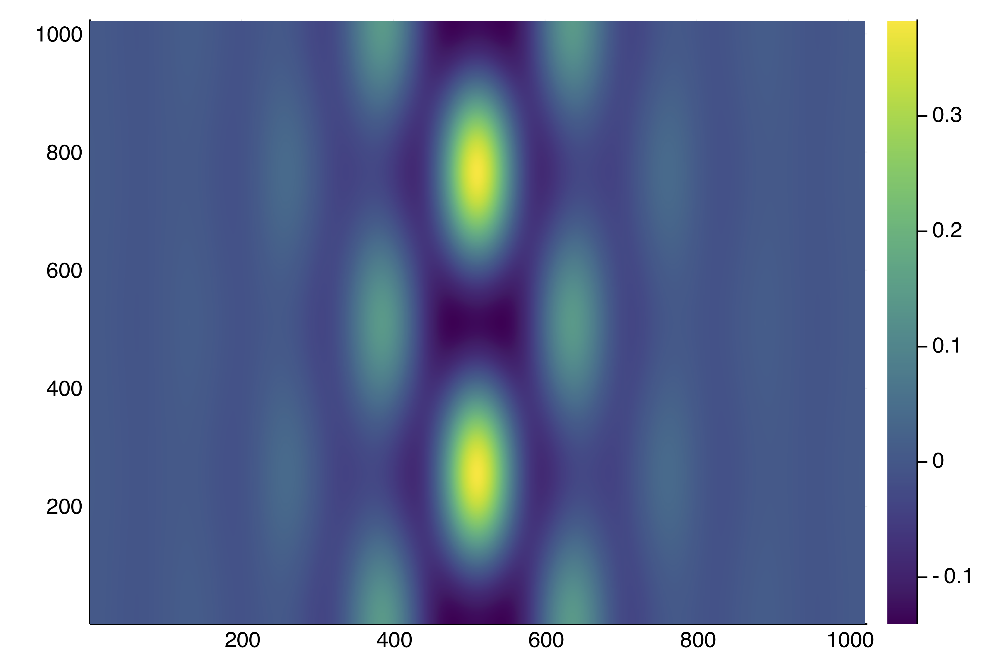

The Swift-Hohenberg equation on the GPU
Here we give an example where the continuation can be done entirely on the GPU, e.g. on a single Tesla K80.
We choose the 2d Swift-Hohenberg as an example and consider a larger grid. See Snaking in the 2d Swift-Hohenberg equation for more details. Solving the sparse linear problem in $v$
with a direct solver becomes prohibitive. Looking for an iterative method, the conditioning of the jacobian is not good enough to have fast convergence, mainly because of the Laplacian operator. However, the above problem is equivalent to:
where
is very well conditioned and
Hence, to solve the previous equation, only a few GMRES iterations are required.
In effect, the preconditioned PDE is an example of nonlocal problem.
Computing the inverse of the differential operator
The issue now is to compute $L$ but this is easy using Fourier transforms.
Hence, that's why we slightly modify the previous Example by considering periodic boundary conditions. Let us now show how to compute $L$. Although the code looks quite technical, it is based on two facts. First, the Fourier transform symbol associated to $L$ is
which is pre-computed in the composite type SHLinearOp. Then, the effect of L on u is as simple as real.(ifft( l1 .* fft(u) )) and the inverse L\u is real.(ifft( fft(u) ./ l1 )). However, in order to save memory on the GPU, we use inplace FFTs to reduce temporaries which explains the following code.
using Revise
using AbstractFFTs, FFTW, KrylovKit, Setfield, Parameters
using PseudoArcLengthContinuation, LinearAlgebra, Plots
const PALC = PseudoArcLengthContinuation
# the following struct encodes the operator L1
# Making the linear operator a subtype of PALC.AbstractLinearSolver is handy as it will be used
# in the Newton iterations.
struct SHLinearOp{Treal, Tcomp, Tl1, Tplan, Tiplan} <: PALC.AbstractLinearSolver
tmp_real::Treal # temporary
tmp_complex::Tcomp # temporary
l1::Tl1
fftplan::Tplan
ifftplan::Tiplan
end
# this is a constructor for the above struct
function SHLinearOp(Nx, lx, Ny, ly; AF = Array{TY})
# AF is a type, it could be CuArray{TY} to run the following on GPU
k1 = vcat(collect(0:Nx/2), collect(Nx/2+1:Nx-1) .- Nx)
k2 = vcat(collect(0:Ny/2), collect(Ny/2+1:Ny-1) .- Ny)
d2 = [(1-(pi/lx * kx)^2 - (pi/ly * ky)^2)^2 + 1. for kx in k1, ky in k2]
tmpc = Complex.(AF(zeros(Nx, Ny)))
return SHLinearOp(AF(zeros(Nx, Ny)), tmpc, AF(d2), plan_fft!(tmpc), plan_ifft!(tmpc))
end
import Base: *, \
# action of L
function *(c::SHLinearOp, u)
c.tmp_complex .= Complex.(u)
c.fftplan * c.tmp_complex
c.tmp_complex .= c.l1 .* c.tmp_complex
c.ifftplan * c.tmp_complex
c.tmp_real .= real.(c.tmp_complex)
return copy(c.tmp_real)
end
# inverse of L
function \(c::SHLinearOp, u)
c.tmp_complex .= Complex.(u)
c.fftplan * c.tmp_complex
c.tmp_complex .= c.tmp_complex ./ c.l1
c.ifftplan * c.tmp_complex
c.tmp_real .= real.(c.tmp_complex)
return copy(c.tmp_real)
endBefore applying a Newton solver, we need to tell how to solve the linear equation arising in the Newton Algorithm.
# inverse of the jacobian of the PDE
function (sh::SHLinearOp)(J, rhs; shift = 0., tol = 1e-9)
u, l, ν = J
udiag = l .+ 1 .+ 2ν .* u .- 3 .* u.^2 .- shift
res, info = KrylovKit.linsolve( du -> -du .+ sh \ (udiag .* du), sh \ rhs, tol = tol, maxiter = 6)
return res, true, info.numops
endNow that we have our operator L, we can encode our functional:
function F_shfft(u, p)
@unpack l, ν, L = p
return -(L * u) .+ ((l+1) .* u .+ ν .* u.^2 .- u.^3)
endLinear Algebra on the GPU
We plan to use KrylovKit on the GPU. For this to work, we need to redefine some functions for CuArrays.jl.
Note that the following code will not be needed in the future when CuArrays improves.
using CuArrays
CuArrays.allowscalar(false)
import LinearAlgebra: mul!, axpby!
mul!(x::CuArray, y::CuArray, α::T) where {T <: Number} = (x .= α .* y)
mul!(x::CuArray, α::T, y::CuArray) where {T <: Number} = (x .= α .* y)
axpby!(a::T, X::CuArray, b::T, Y::CuArray) where {T <: Number} = (Y .= a .* X .+ b .* Y)
# type used for the arrays, can be Float32 is GPU requires it
TY = Float64
# put the AF = Array{TY} instead to make the code on the CPU
AF = CuArray{TY}We can now define our operator L and an initial guess sol0.
using LinearAlgebra, Plots
# to simplify plotting of the solution
heatmapsol(x) = heatmap(reshape(Array(x), Nx, Ny)', color=:viridis)
# norm compatible with CuArrays
norminf(x) = maximum(abs.(x))
Nx = 2^10
Ny = 2^10
lx = 8pi * 2
ly = 2*2pi/sqrt(3) * 2
X = -lx .+ 2lx/(Nx) * collect(0:Nx-1)
Y = -ly .+ 2ly/(Ny) * collect(0:Ny-1)
sol0 = [(cos(x) .+ cos(x/2) * cos(sqrt(3) * y/2) ) for x in X, y in Y]
sol0 .= sol0 .- minimum(vec(sol0))
sol0 ./= maximum(vec(sol0))
sol0 = sol0 .- 0.25
sol0 .*= 1.7
L = SHLinearOp(Nx, lx, Ny, ly, AF = AF)
# parameters of the PDE
par = (l = -0.15, ν = 1.3, L = L)Newton iterations and deflation
We are now ready to perform Newton iterations:
opt_new = NewtonPar(verbose = true, tol = 1e-6, maxIter = 100, linsolver = L)
sol_hexa, hist, flag = @time PALC.newton(
x -> F_shfft(x, par),
u -> (u, par.l, par.ν),
AF(sol0),
opt_new, normN = norminf)
println("--> norm(sol) = ", maximum(abs.(sol_hexa)))
heatmapsol(sol_hexa)You should see this:
Newton Iterations
Iterations Func-count f(x) Linear-Iterations
0 1 2.7383e-01 0
1 2 1.2891e+02 14
2 3 3.8139e+01 70
3 4 1.0740e+01 37
4 5 2.8787e+00 22
5 6 7.7522e-01 17
6 7 1.9542e-01 13
7 8 3.0292e-02 13
8 9 1.1594e-03 12
9 10 1.8842e-06 11
10 11 4.2642e-08 10
2.261527 seconds (555.45 k allocations: 44.849 MiB, 1.61% gc time)
--> norm(sol) = 1.26017611779702Note that this is about the same computation time as in Example 2 but for a problem almost 100x larger!
The solution is:

We can also use the deflation technique (see DeflationOperator and DeflatedProblem for more information) on the GPU as follows
deflationOp = DeflationOperator(2.0, (x, y)->dot(x, y), 1.0, [sol_hexa])
opt_new = @set opt_new.maxIter = 250
outdef, _, flag, _ = @time newton(
x -> F_shfft(x, par),
u -> (u, par.l, par.ν),
0.4 .* sol_hexa .* AF([exp(-1(x+0lx)^2/25) for x in X, y in Y]),
opt_new, deflationOp, normN = x-> maximum(abs.(x)))
println("--> norm(sol) = ", norm(outdef))
heatmapsol(outdef) |> display
flag && push!(deflationOp, outdef)and get:

Computation of the branches
Finally, we can perform continuation of the branches on the GPU:
opts_cont = ContinuationPar(dsmin = 0.001, dsmax = 0.007, ds= -0.005, pMax = 0.2, pMin = -1.0, theta = 0.5, plotEveryNsteps = 5,
newtonOptions = setproperties(opt_new; tol = 1e-6, maxIter = 15), maxSteps = 100)
br, _ = @time continuation(
(u, p) -> F_shfft(u, @set par.l = p),
(u, p) -> (u, p, par.ν),
deflationOp[1],
-0.1,
opts_cont, plot = true,
plotSolution = (x;kwargs...)->heatmap!(reshape(Array(x), Nx, Ny)'; color=:viridis, kwargs...), normC = x->maximum(abs.(x)))We did not detail how to compute the eigenvalues on the GPU and detect the bifurcations. It is based on a simple Shift-Invert strategy, please look at examples/SH2d-fronts-cuda.jl.